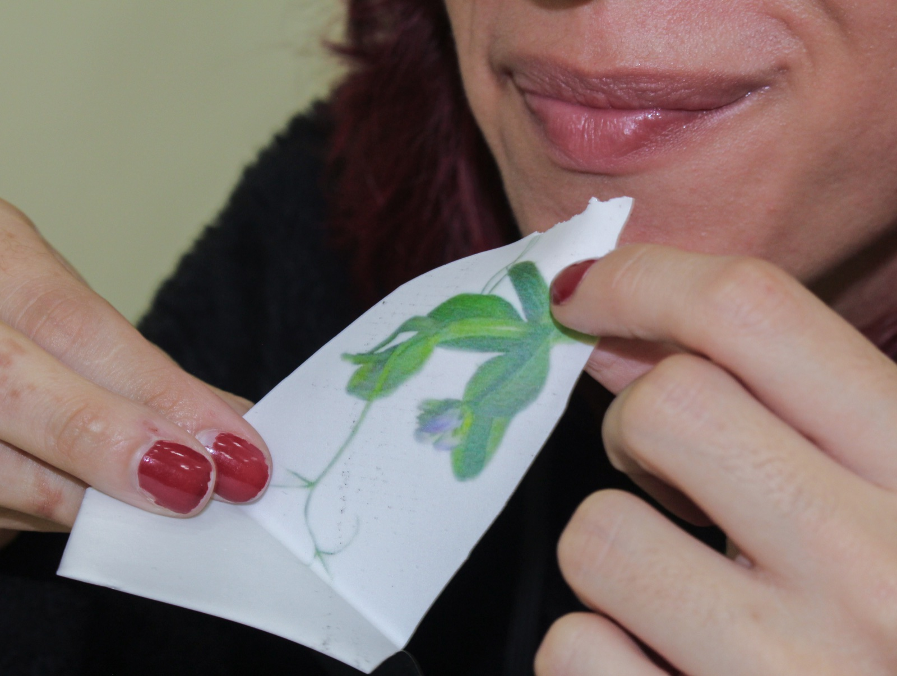
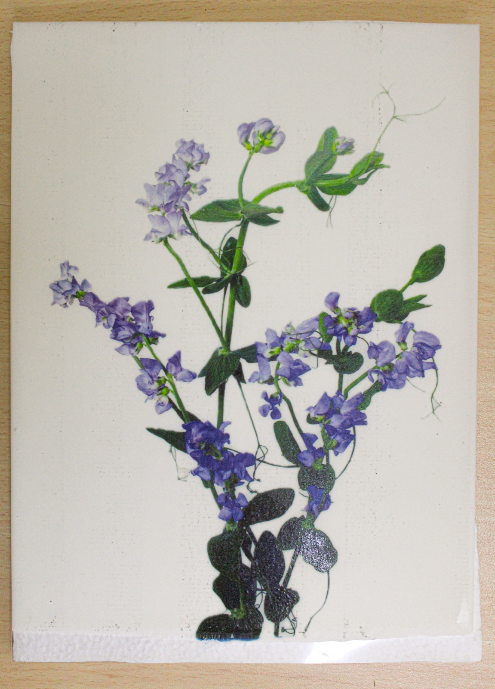

doblar una flor
30 de Mayo del 2025
Casa Fernández - Bogotá.
Segunda Jornada de Estudios Abiertos.
Residencia En Bloque - Idartes.
Como parte de la Segunda Jornada de Estudios Abiertos, realizada el 30 de mayo de 2025, se llevó a cabo una conversación con los asistentes sobre el proyecto “Antejardín” y se realizó el taller “Doblar una flor”, desarrollado en Casa Fernández, en el marco de la Residencia En Bloque de Idartes.
La conversación abrió con una presentación del proyecto, que se interesa por el antejardín como espacio intermedio entre la calle y la casa: un lugar ni completamente público ni del todo privado, con un carácter liminal, de umbral. El proyecto trabaja con los objetos que pueblan ese espacio —regaderas, palas, recipientes, tierra y fuentes— y cómo, en lugar de reproducir su forma o su uso, los desajusta para dejar ver su fragilidad. Se habló de las piezas cerámicas que resultan de ese proceso, como regaderas sin orificios, recipientes que escurren y flores de cerámica que sobresalen de una montaña de tierra. Estas piezas no buscan resolver una función, sino plantear preguntas sobre ella y sobre el orden de lo doméstico, lo decorativo y lo útil.
A partir de ese marco, el taller propuso trasladar la pregunta por el jardín al entorno inmediato: la flora del Parque Nacional. Los participantes conversaron sobre las plantas que habitan este espacio público, sus formas, sus nombres y las relaciones que las personas tienen con ellas, mientras coloreaban láminas de tres especies escogidas. Colorear funcionó como una actividad pausada que acompañó la charla y favoreció la observación atenta de cada flor.
El taller, de carácter abierto y participativo, contó con seis asistentes. Así, el proyecto se extendió más allá de la sala de exposición, hacia un espacio de intercambio donde las personas pudieron relacionarse con la flora del parque a través del dibujo.

Taller. Casa Fernández, Bogotá. 2025.

Taller. Casa Fernández, Bogotá. 2025.

Lámina coloreada durante el taller. 2025.